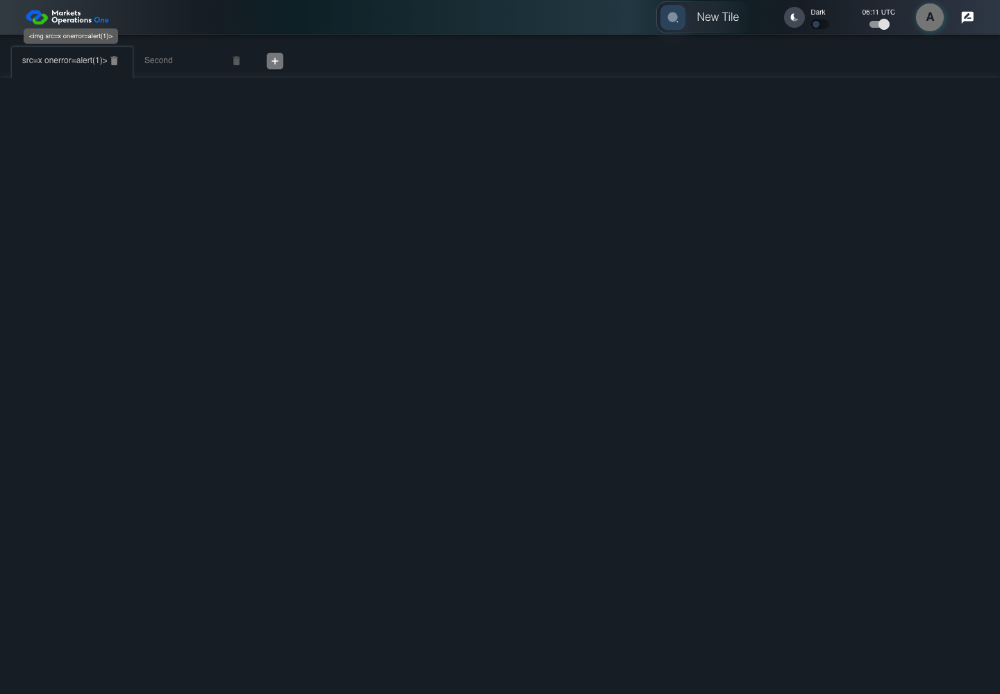

UX-037 workspace text boundary
PASS · application/run-050/ux-037-workspace-text-boundary-fc2fdb77b58b-attempt-1 · ACTUAL_APPLICATION_LOCAL_SERVICES
Actual React shell. Controlled catalog, user identity, photo failures, and SystemJS tenant. Chromium only. Accessibility and layout outcomes are proposed probes; no approved conformance standard is inferred.
2026-10-22T06:11:54.848Z to 2026-10-22T06:11:57.070Z
Assertions and result · Artifact manifest · Exact run inputs and source hashes
Result SHA-256:725ce8c133b9220f4a223383bd1e6184231aec5017f24d97ecd7074e1f0894ccMachine observations
- script-dialog-events.json
b8489f4056554c7c58133a6adbb3b514eaee71de2c3e1a442d4194cafcbca791
Screenshot capture: CAPTURED. Named frames: 5.
Step screenshot evidence: COMPLETE. 4/4 canonical steps have execution screenshots.
Canonical step timeline
Given USER-A has the Cashflow workspace loaded with a script-dialog recorder installed
Execution: PASSED.1. step-01 Visible state after step 1: Given USER-A has the Cashflow workspace loaded with a script-dialog recorder installed
2026-10-22T06:11:56.352Z · 1440×1000
Step: /Users/lushevol/code/github/ratan-release-impact/workbench/tasks/ui-test-coverage-20261022/test-cases.md:13448
SHA-256:0d0ebfd242118e9756787be5f5945a5dc225c1e219bce364a60e8a7d920a733dWhen USER-A types "<img src=x onerror=alert(1)>" as the replacement value in the textbox labelled "Workspace Name" in the tab labelled "Cashflow" on the Home page
Execution: PASSED.
2. step-02 Visible state after step 2: When USER-A types "<img src=x onerror=alert(1)>" as the replacement value in the textbox labelled "Workspace Name" in the tab labelled "Cashflow" on the Home page
2026-10-22T06:11:56.445Z · 1440×1000
Step: /Users/lushevol/code/github/ratan-release-impact/workbench/tasks/ui-test-coverage-20261022/test-cases.md:13449
SHA-256:e6c3551480f4ed65d80fe27da4fb9e572aca3ba2a0013a95ff14e72fa561236cThen The workspace name input value equals "<img src=x onerror=alert(1)>"
Execution: PASSED.3. step-03 Visible state after step 3: Then The workspace name input value equals "<img src=x onerror=alert(1)>"
2026-10-22T06:11:56.546Z · 1440×1000
Step: /Users/lushevol/code/github/ratan-release-impact/workbench/tasks/ui-test-coverage-20261022/test-cases.md:13450
SHA-256:15eb23393a4c51222738b34ba3cabd8cfedf124ece2ad5766657b085331d6509And The script-dialog recorder contains zero alert events
Execution: PASSED.
4. step-04 Visible state after step 4: And The script-dialog recorder contains zero alert events
2026-10-22T06:11:56.612Z · 1440×1000
Step: /Users/lushevol/code/github/ratan-release-impact/workbench/tasks/ui-test-coverage-20261022/test-cases.md:13451
SHA-256:15eb23393a4c51222738b34ba3cabd8cfedf124ece2ad5766657b085331d6509
Additional named frames

The final visible state after the named test assertions.
2026-10-22T06:11:56.725Z · 1440×1000Step: Test source: /Users/lushevol/code/github/ratan-release-impact/workbench/e2e/audit-specs/ux-shell.spec.ts:133
SHA-256:
15eb23393a4c51222738b34ba3cabd8cfedf124ece2ad5766657b085331d6509Screenshots establish visible state only. Assertions and traces support functional claims.